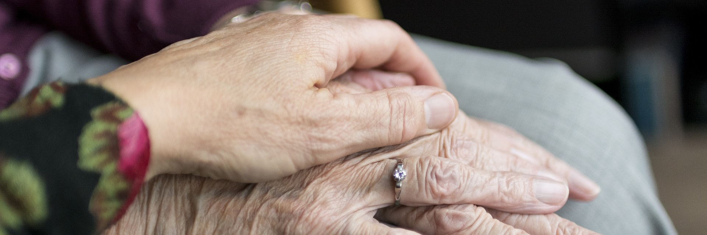

Enfance, éducation et santé

Petite enfance
La commune de Triskalya ha Plafälda propose des garderies pour les enfants de moins de 3 ans. Elles sont accessibles gratuitement à condition que les parents habitent Triskalya ou y travaillent. Les équipes et les bâtiments sont mutualisés avec l'école maternelle.
Education
Triskalya abrite différents types d'établissements couvrant les différentes étapes de la vie de l'enfant et de l'adolescent. Voici la liste de ces établissements :
- École maternelle Iskar Televirë - De la M1 à la M3 (Environ 3-6 ans)
- École primaire Iskar Televirë - De la P1 à la P5 (Environ 6-10 ans)
- École secondaire Valämyr Salnavi - De la S1 à la S7 (Environ 10-18 ans)
L'école maternelle est gérée par la commune. Elle contribue à l'éveil des enfants et à leur apprendre des savoirs fondamentaux : lecture, calcul, écriture... L'école primaire, gérée par le district, consolide ces acquis et propose un socle de connaissances de base en aglitanien, en mathématiques, en sciences et en histoire-géographie. L'école secondaire est quant à elle sous la tutelle de la région et a pour but de former des citoyens autonomes et responsables. Elle permet également de découvrir certains métiers.
Les élèves souhaitant continuer leur formation peuvent s'orienter soit vers un Institut des Métiers, pour suivre une formation professionnalisante en 2 ans, soit vers une Université pour des formations plus techniques allant de 3 à 5 ans, voire plus. L'Université et l'Institut des Métiers les plus proches se trouvent à Filtanyë, mais il est possible de s'inscrire dans n'importe quel Institut des Métiers ou Université d'Aglitanie.
Accès à la santé
Afin de rapprocher ses habitants de la médecine généraliste, le district de Plafälda a ouvert un centre de santé à Triskalya. Il compte 20 médecins généralistes et quelques médecins spécialisés disponibles ponctuellement. Il est ouvert à tout habitant du district qui peut choisir l'un des médecins du centre comme médecin traitant. L'objectif est de lutter contre les déserts médicaux dans les villages et dans les petites villes.
Triskalya ha Plafälda comporte également un centre hospitalier. Il propose une large palette en termes de soins et possède un service médical d'urgence. Les soins plus spécifiques se feront au centre hospitalier de Filtanyë. Ces deux établissements sont gérés par la région.
Personnes âgées
La commune de Triskalya ha Plafälda met à disposition des infirmiers à domicile pour les personnes âgées pour les personnes êgées ayant perdu leur autonomie. Il est également possible pour elles de rejoindre la maison de retraites de Triskalya, gérée par la commune, où elles seront accompagnées. La commune propose aussi plusieurs services utiles à destination des seniors comme la livraison de repas à domicile.